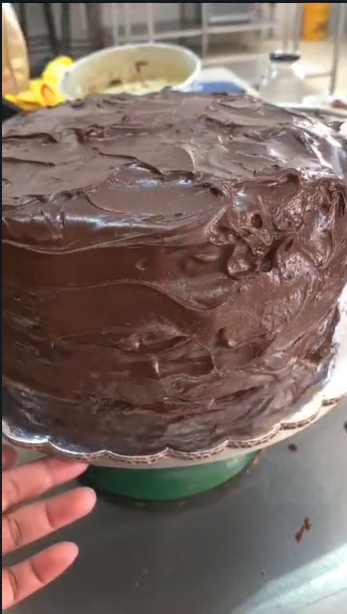
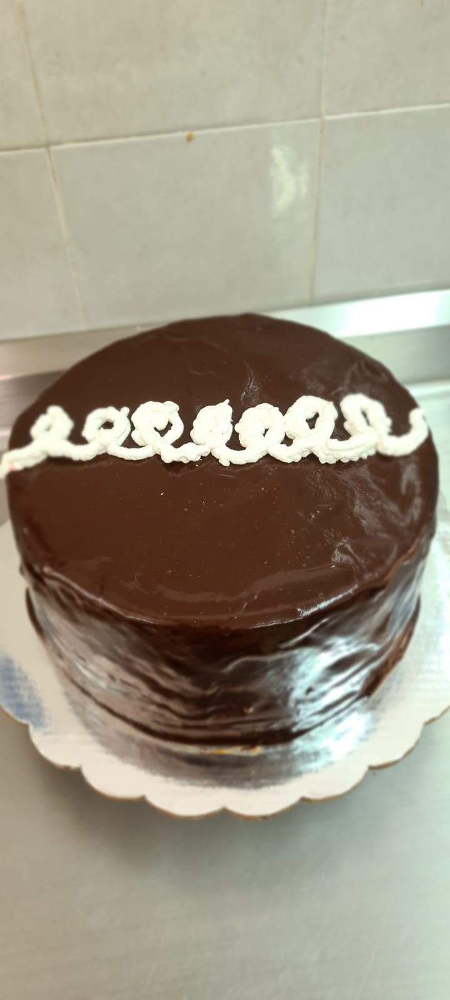
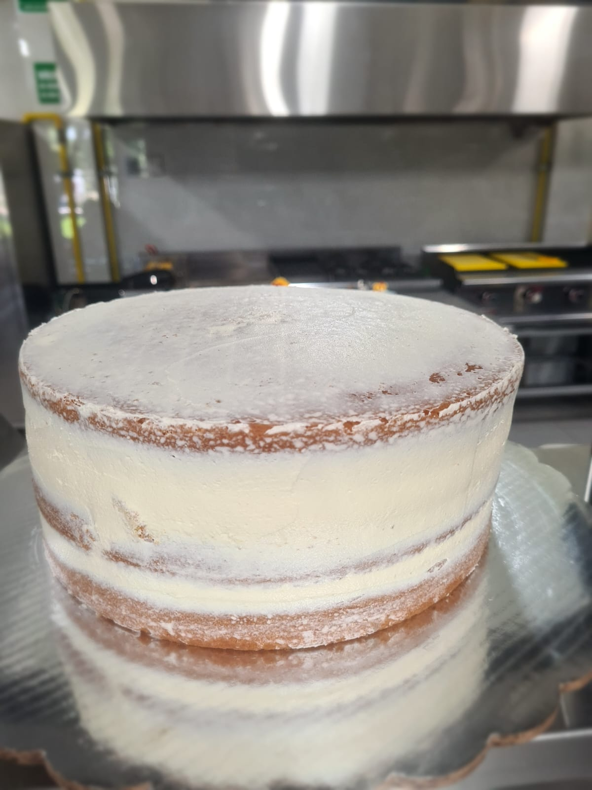
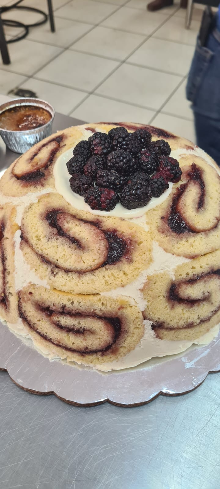

Menú

Pastel de Chocolate Matilda
El pastel de chocolate Matilda está elaborado con capas de pastel de chocolate ricas y húmedas y cubierto con glaseado de chocolate brillante y rico en sabor a chocolate.

Pastel Pingüinos
Delicioso pastel elaborado con pan de chocolate relleno de exquisita crema de chantilly, cubierto con glasé de chocolate amargo y decorado como los clásicos.

Pastel de Vainilla
Pan de vainilla casero, de capas relleno de mermelada de fresa. Cubierto de betún de mantequilla.

Carolta Royal
Esta carlota royal es un postre sumamente espectacular. Tiene un cremoso interior de zarzamoras hecho a base de crema bavaria y va cubierto con unos ricos rollitos de pan con mermelada. Lo mejor de todo es que tiene una presentación espectacular.